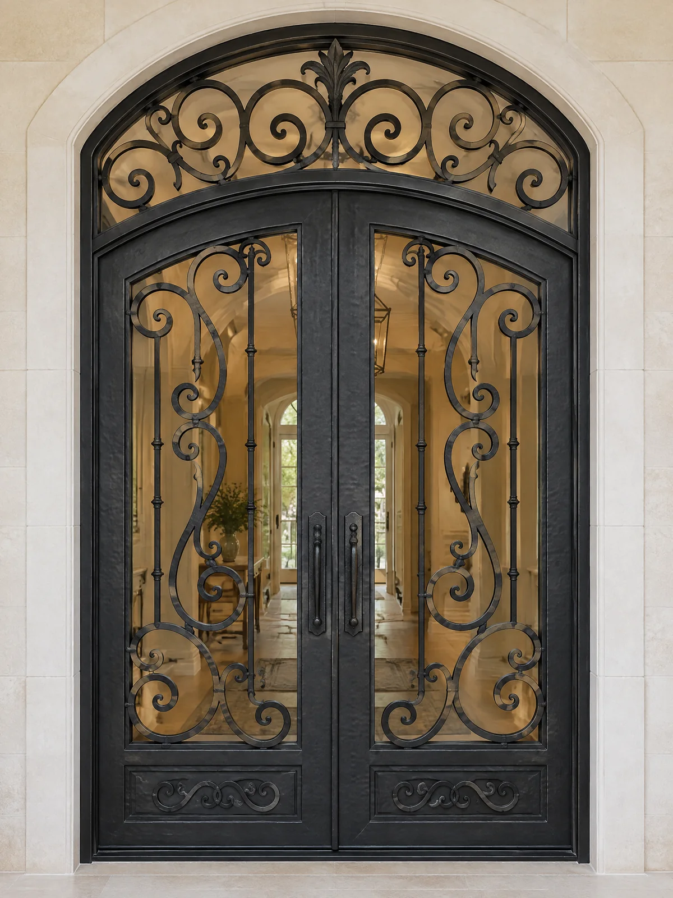
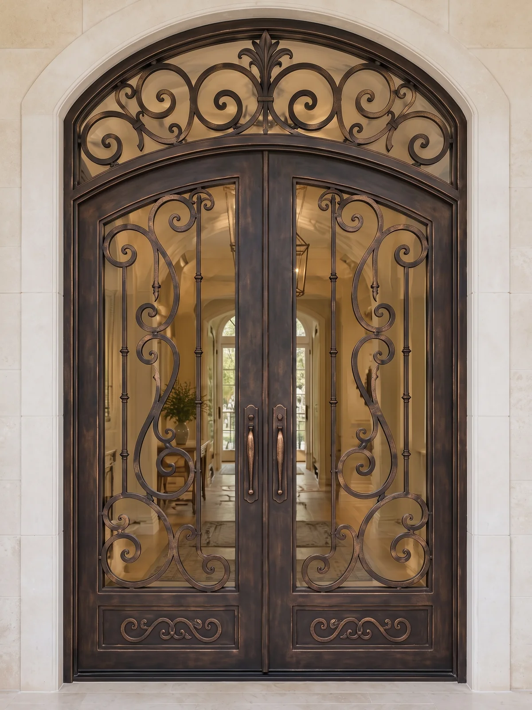
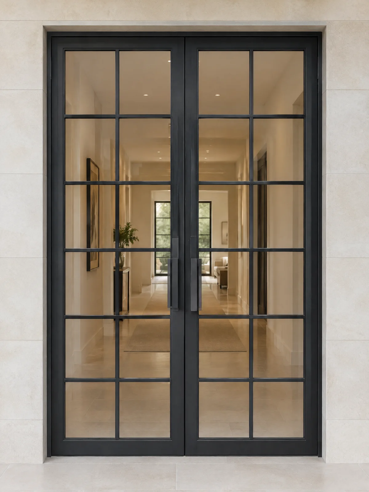
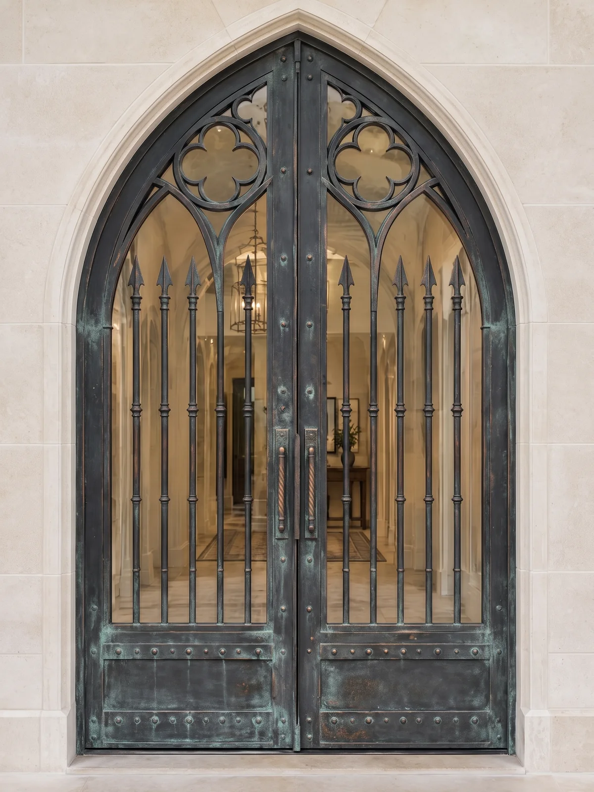
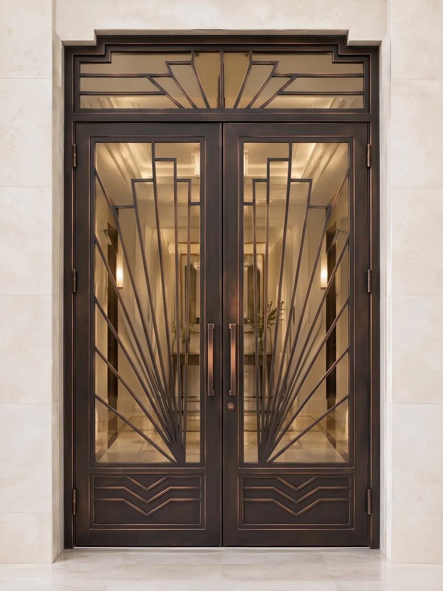
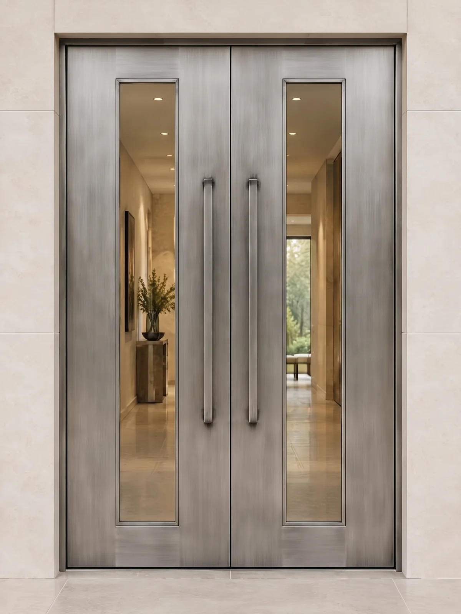
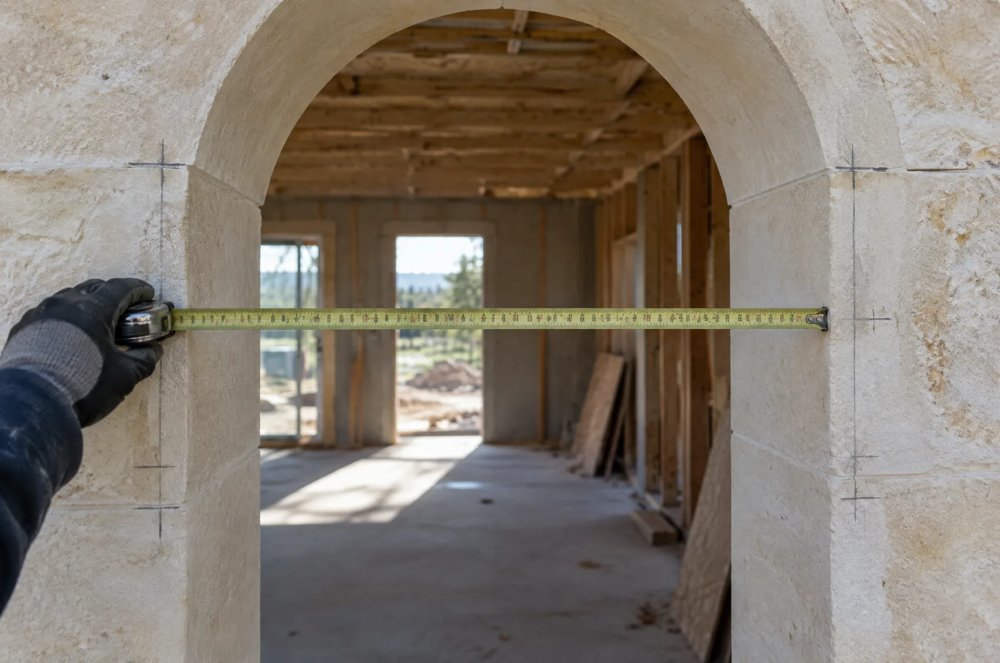
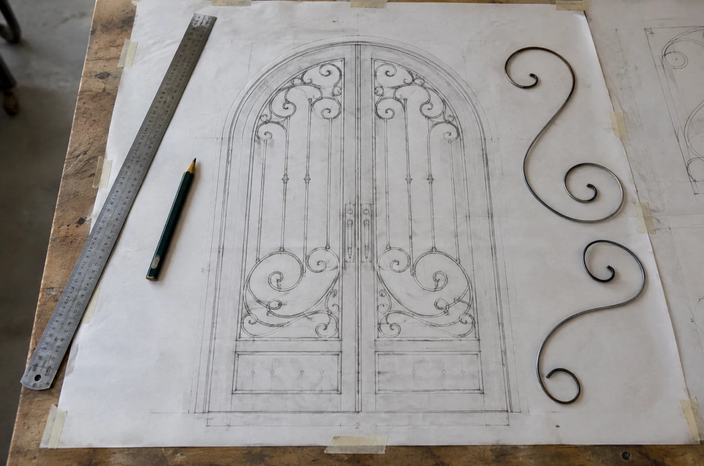
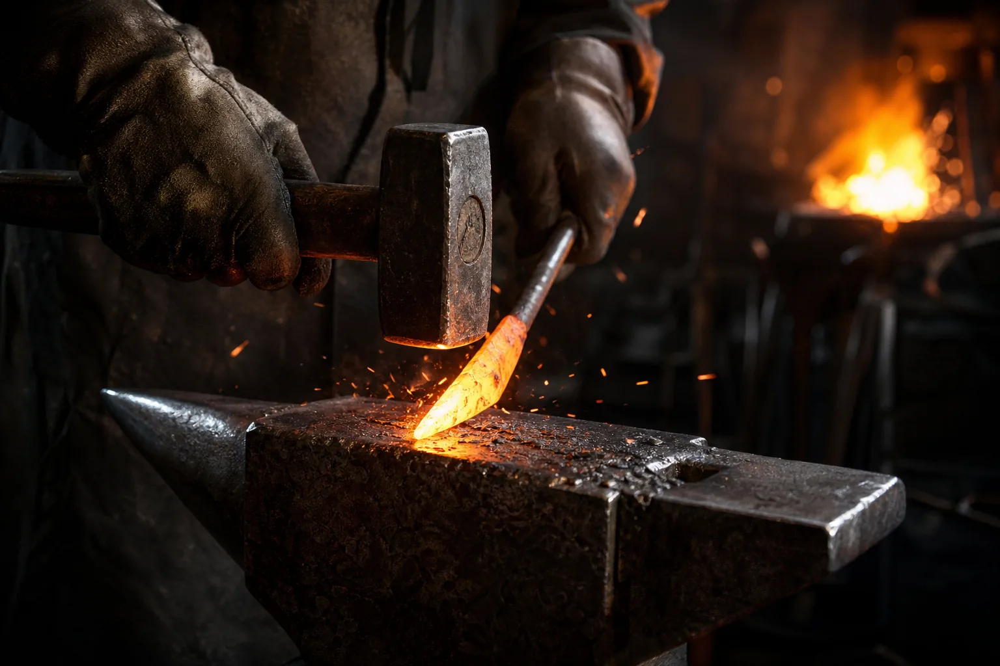
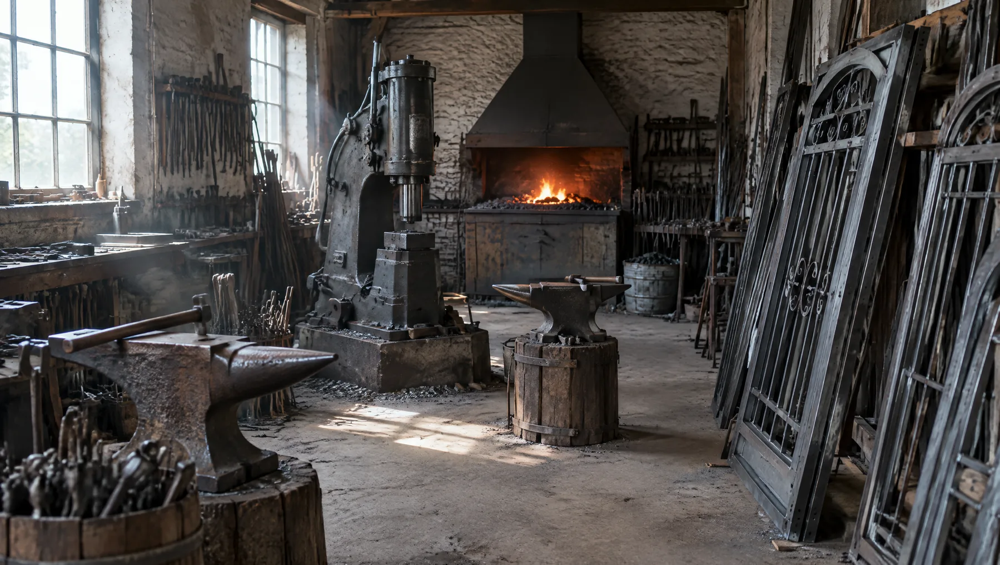

See your door before we forge it.
Pick a style, finish and glass. Every combination is photographed, so you choose from the real thing.

Five styles. Every one drawn to your opening.
Hover a style to open it, or tap one to start a door in that style.

Tuscan
Forged scrollwork over an arched transom. The most work at the anvil.

Modern
A flat bar grid with slim sightlines. Fastest to make.

Gothic
Pointed arch, spear pickets and a quatrefoil. Riveted straps.

Art Deco
Stepped transom and sunburst lines. Geometric, not fussy.

Flush
Plain steel leaves with one tall vision lite and a long pull.
You pick it here. We measure your opening   

"I would rather turn work away than send it to somebody I cannot stand next to at the anvil."
Ruben Torres
Founder
Doors are half of it.
Gates, railings, stairs and steel windows leave the same shop.


Every door starts as a ticket.
Yours follows you around the site. Send it when it looks right and a person replies within two business days.
 Double Tuscan
Ticket
Send your ticket →
Double Tuscan
Ticket
Send your ticket →